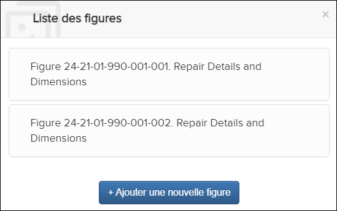

Non applicable pour Pinpoint Standalone Light.
Tous les utilisateurs peuvent télécharger des feuilles de figures dans la Liste des figures. Si les utilisateurs n'ont pas les droits d'auteur, le Télécharger la page graphique est la seule icône disponible.
Pour télécharger une feuille de figures, procédez comme suit:
-
Dans l'en-tête du volet Contenu, sélectionnez l'icône
 Liste des figures.
La boîte de dialogue Liste des figures apparaît. Par example:
Liste des figures.
La boîte de dialogue Liste des figures apparaît. Par example:
Liste des figures Dialogue